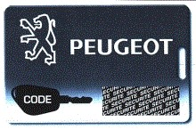

When adapting new keys to the car, all keys, old and new, MUST be available before programming. All keys must be reprogrammed.
Coding of keys, in steps:
Read out, take care of, and erase any fault codes
Collect all keys to be programmed/used with the vehicle.
Scrape to see the security code 
Enter the security code as it is shown on the code card in the field for security code, press OK, wait for acknowledgement.
Turn off the ignition.
Start key programming by selecting the function: Start key programming, press OK.
Turn on the ignition with an unprogrammed key.
Turn off the ignition.
Continue acc. to step number 7 and forward until all keys are programmed (max. 5).
Turn on the ignition.
Exit key programming by selecting the function: Exit key programming, press OK (NOTE ignition on).
Check that all keys are programmed in data list 9.
Coding of keys is finished with a synchronization of remote controls for central lock control.
Synchronizing remote control, in steps:
Perform above procedure for coding of keys for the system.
After the last key has been programmed, leave the ignition on.
Press and hold in the lock button on the remote control for 10 seconds.
Turn off the ignition.
Wait a few seconds.
The remote control is now synchronized.